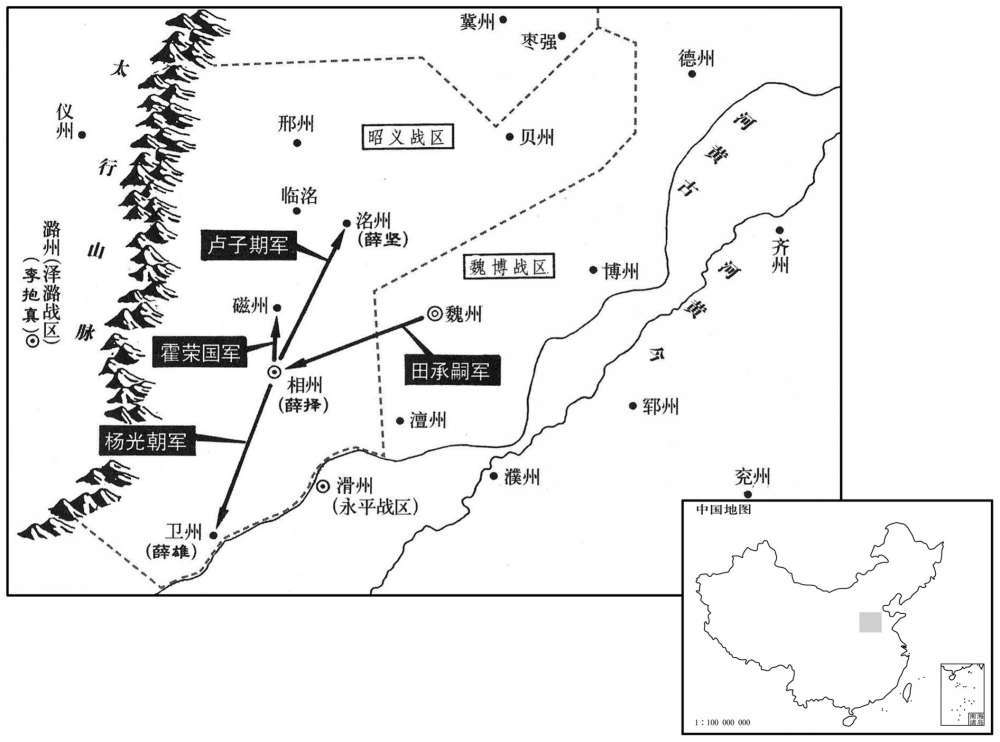
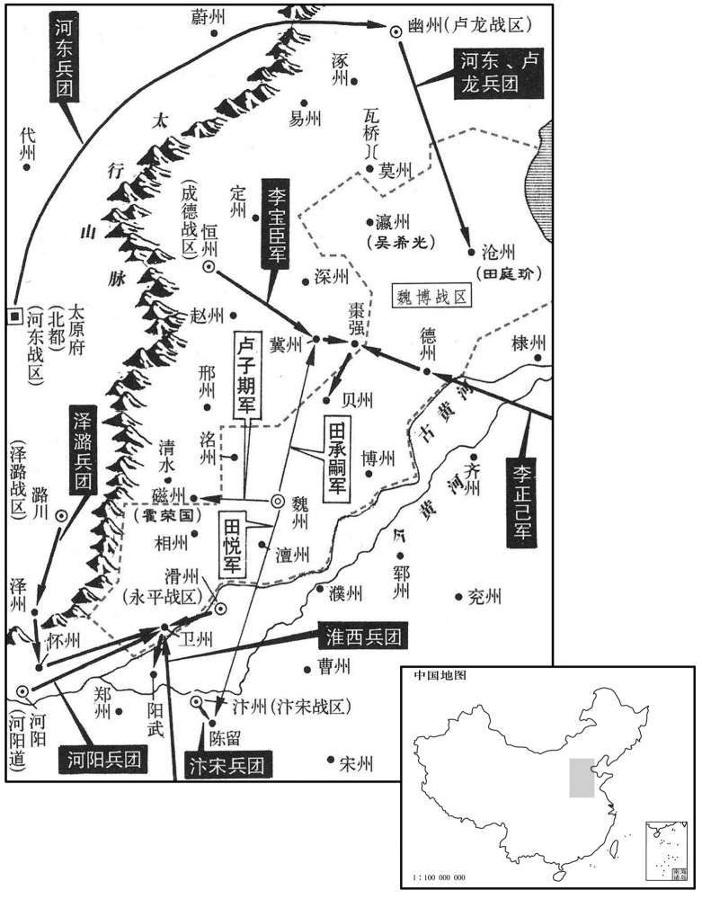
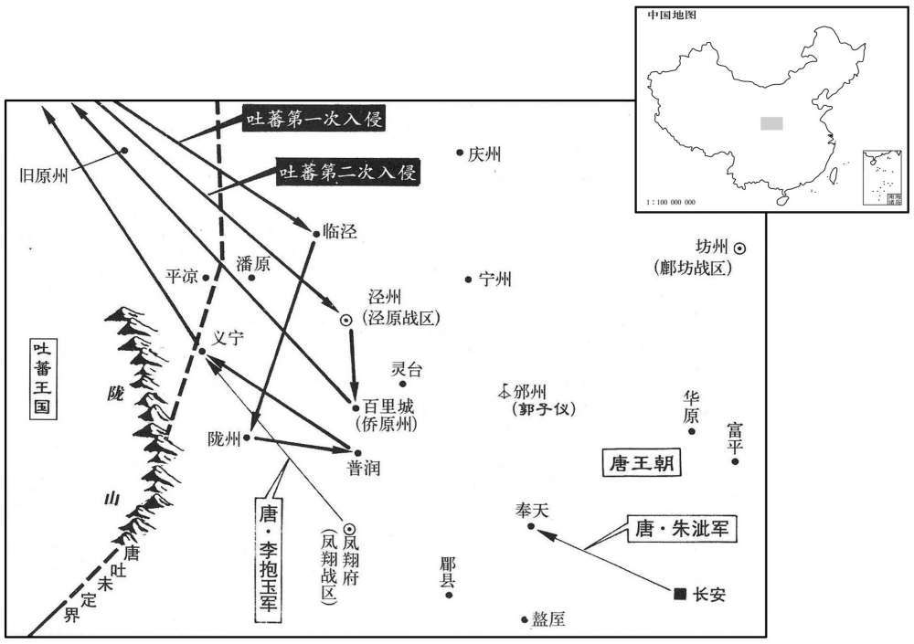

公元775年资治通鉴：本年记事、原文与白话对照
按原书编年位置阅读；追叙和史论不等于本年发生的事件。白话采用所据译本，缺译不以生成译文补齐。
卷225 · 本年记事
公元775年 · 唐代宗睿文孝武皇帝大历十年
十年〔（乙卯、七七五）〕
上传原文的注释括号有异常，字符原样保留；无法可靠划分的段落默认全文显示。
本年事件索引（现代整理）
- 裴志清逐走薛崿并归附田承嗣
- 郭子仪入朝
- 寿王李瑁去世
- 朱泚留在朝中，弟朱滔接掌幽州留后
- 薛择等薛氏将领分别出任相、卫、洺州刺史
- 崔宁奏报大破吐蕃，斩俘万余人
- 代宗禁止各道擅自招募逃亡士兵
- 薛雄不肯叛魏博，遭田承嗣派人杀害并吞并四州
- 代宗册封多位皇子为王
- 代宗任李承昭为昭义留后
- 河阳军士驱逐苛刻的常休明并拥立王惟恭
- 陕州军队哗变劫库，李忠臣整肃并追回库物
- 薛崿、常休明入朝请罪，代宗赦免
- 李宝臣、李正己与田承嗣交恶并请求讨伐魏博
- 朱滔联合诸镇围攻田承嗣，霍荣国等将领先后投降
- 田承嗣遭诸道围攻，遣使请罪归朝
- 郭子仪认为朝廷不准其奏请任官，正是信任武臣
- 田承嗣派卢子期进犯磁州
- 回纥人当街刺伤百姓，首领劫狱救走犯人
- 吐蕃进犯临泾、陇州等地，李抱玉击退其军
- 李宝臣、李正己围攻贝州无功，李忠臣撤军
- 吐蕃进犯泾州，马璘在百里城击败吐蕃
- 出现日食
- 卢子期攻磁州受挫，被李宝臣、李承昭擒获
- 李承嗣游说李正己停止进兵，得以专力防守北方
- 代宗派马承倩慰劳李宝臣，王武俊劝其保存实力
- 田承嗣以伪造谶文诱使李宝臣谋取范阳
- 李宝臣派精骑突袭朱滔营地，未能攻取范阳
- 田承嗣借口救援撤兵，李宝臣转而防备朱滔
- 代宗追谥独孤贵妃为贞懿皇后
- 田承嗣部将吴希光献瀛州归降
- 路嗣恭攻克广州，斩杀哥舒晃
- 王翃伏击并擒获袭击容州的覃问
- 回纥千骑进犯夏州，被梁荣宗击退
- 元载、王缙请求禁盐入魏博，代宗拒绝以免百姓受害
- 田承嗣请求入朝，李正己屡次为其上表

本年形势与背景参考图

本年形势与背景参考图

本年形势与背景参考图
春，正月，丁酉，昭义兵马使裴志清逐留后薛崿，帅其众归承嗣。〔帅，读曰率。〕承嗣声言救援，引兵袭相州，取之。〔相，息亮翻；下同。〕崿奔洺洲，〔洺，音名。〕上表请入朝，许之。〔上，时掌翻。朝，直遥翻。〕
春季，正月丁酉（初三），昭义兵马使裴志清驱逐留后薛，率领部众投靠田承嗣。田承嗣声称救援，带兵袭击和夺取了相州。薛逃奔州，上表请求入朝，代宗同意了。
辛丑，郭子仪入朝。
辛丑（初七），郭子仪入朝。
壬寅，寿王瑁薨。〔瑁，亦玄宗子；音莫报翻。〕
壬寅（初八），寿王李瑁去世。
乙巳，朱泚表请留阙下，以弟滔知幽州、卢龙留后，许之。
乙巳（十一日），朱上表请求留在朝廷，让弟弟朱滔担任幽州、卢龙留后，代宗表示同意。
昭义裨将薛择为相州刺史，薛雄为卫州刺史，薛坚为洺州刺史，皆薛嵩之族也。〔相、卫、洺，本皆昭义巡属。〕戊申，上命内侍魏（〔【章：十二行本「魏」作「孙」；乙十一行本同；下同；退斋校同。】〕知古如魏州谕田承嗣，使各守封疆；承嗣不奉诏，癸丑，遣大将卢子期取洺州，杨光朝攻卫州。
昭义副将薛择担任相州刺史，薛雄担任卫州刺史，薛坚担任州刺史，他们都是薛嵩的族人。戊申（十四日），代宗命令内侍魏知古到魏州去劝告田承嗣，让他们各守自己的疆界；田承嗣不接受皇上的诏令，癸丑（十九日），派遣大将卢子期攻取州，杨光朝进攻卫州。
乙卯，西川节度使崔宁奏破吐蕃数万于西山，〔吐，从暾入声。〕斩首万级，捕虏数千人。
乙卯（二十一日），西川节度使崔宁奏报说，在西山击败了吐蕃数万人的军队，杀一万人，俘虏数千人。
丙辰，诏：「诸道兵有逃亡者，非承制敕，无得辄召募。」
丙辰（二十二日），代宗颁发诏书说：“各道都有士兵逃亡，没有接到朕的制敕，不得随意召募。”
二月，乙丑，田承嗣诱卫州刺吏薛雄，雄不从，使盗杀之，屠其家，尽据相、卫四州之地，〔相、卫已陷于承嗣，磁、洺虽未下，而承嗣已据其地。相、卫二州自此属魏博。〕自置长吏，掠其精兵良马，悉归魏州；逼魏知古与共巡磁、相二州，〔磁，疾之翻。〕使其将士割耳剺面，〔剺，力之翻。〕请承嗣为帅。〔帅，所类翻；下同。〕
二月乙丑（初一），田承嗣引诱卫州刺史薛雄造反，薛雄不从，田承嗣便派强盗杀掉薛雄，屠杀他的家属，占据相州、卫州等四州的全部地区，自行设置长吏，将那里的精兵良马全都掳掠到魏州。田承嗣逼迫魏知古与他一起巡视磁州、相州，又让他的将士割耳划脸，请田承嗣担任主帅。
辛未，立皇子述为睦王，逾为郴王，连为恩王，沟为鄜王，〔郴，丑林翻。鄜，芳无翻。〕迅为随王，造为忻王，暹为韶王，运为嘉王，遇为端王，遹为循王，〔遹，余律翻。〕通为恭王，达为原王，逸为雅王。〔诸皇子皆以州为王国名。〕
辛未（初七），代宗立皇子李述为睦王，李逾为郴王，李连为恩王，李遘为王，李迅为随王，李造为忻王，李暹为韶王，李运为嘉王，李遇为端王，李为循王，李通为恭王，李达为原王，李逸为雅王。
丙子，以华州刺吏李承昭知昭义留后。〔华，户化翻。〕
丙子（二十日），代宗任命华州刺史李承昭为昭义留后。
河阳三城使常休明，〔河阳县，本属怀州，显庆二年，分属河南府。城临大河，长桥架水，古称设险。此城，后魏之北中城也。东、西魏兵争，又筑中潬及南城，谓之河阳三城。干元中，史思明再陷东京，李光弼以重兵守河阳。及雍王平贼，令鱼朝恩守河阳，乃以河南之河清、济源、温四县租税入河阳三城，使河南尹但礼领其县额，寻又以汜水军赋属之。使，疏吏翻。〕苛刻少恩。其军士防秋者归，休明出城劳之，〔少，诗沼翻。劳，力到翻。〕防秋兵与城内兵合谋攻之，休明奔东都；军士奉兵马使王惟恭为帅，大掠，数日乃定。上命监军冉庭兰慰抚之。〔监，古衔翻。〕
河阳三城使常休明对待部下十分苛刻，又缺少恩惠，部下防御吐蕃归来，常休明出城慰劳，防秋的士兵和城内的士兵便合谋进攻他，常休明逃往东都；士兵们拥戴兵马使王惟恭为帅，在城中大肆掠夺，几天后才安定。代宗命令监军冉庭兰去慰问和安抚他们。
三月，甲午，陕州军乱，逐兵马使赵令珍。〔陕，失冉翻。考异曰：唐历：「三月二十八日辛卯，陕州军乱」。实录、唐统纪云「甲午朔」，今从之。〕观察使李国清不能禁，卑辞，徧拜将士，乃得脱去。〔陕，失冉翻。将，即亮翻。〕军士大掠库物。会淮西节度使李忠臣入朝，过陕，〔朝，直遥翻。过，古禾翻。〕上命忠臣按之；将士畏忠臣兵威，不敢动。忠臣设棘围，令军士匿名投库物，〔设棘四围周之，令投所掠库物于其中。〕一日，获万缗，尽以给其从兵为赏。〔缗，眉巾翻。从，才用翻。〕
三月甲午（初一），陕州军队发生哗变，驱逐兵马使赵令珍。观察使李国清无法制止他们，便说谦恭话，并一一求拜将士，才得以脱身离开。士兵们大肆掠夺府库财物。恰好淮西节度使李忠臣入朝，路过陕州，代宗命令李忠臣去制止他们。将士们慑于李忠臣的军威，不敢妄动。李忠臣用荆棘围成一个圈子，命令士兵们无记名将所掠府库的财物投放到圈子中，一天就收了一万缗钱，全部给了他的随从，作为奖赏。
乙巳，薛崿、常休明皆诣阙请罪，上释不问。
乙巳（十二日），薛、常休明都进宫请罪，代宗宽恕他们，不加追究。
初，成德节度使李宝臣、淄青节度使李正己，皆为田承嗣所轻。〔使，疏吏翻。〔淄，庄持翻。嗣，祥吏翻。〕宝臣弟宝正取承嗣女，在魏州，与承嗣子维击球，马惊，误触维死；承嗣怒，囚宝正，以告宝臣。宝臣谢教敕不谨，封杖授承嗣，使挞之；承嗣遂杖杀宝正，由是两镇交恶。及承嗣拒命，宝臣、正己皆上表请讨之，〔上，时掌翻。〕上亦欲因其隙讨承嗣。夏，四月，乙未，敕贬承嗣为永州刺史，〔永州，汉零陵郡，隋废郡为永州。〕仍命河东、成德、幽州、淄青、淮西、永平、汴宋、河阳、泽潞诸道发兵前临魏博，若承嗣尚或稽违，即令进讨；罪止承嗣及其侄悦，自余将士弟侄苟能自拔，一切不问。〔令，力丁翻。将，即亮翻。〕
从前，成德军节度使李宝臣和淄青节度使李正己，都被田承嗣所瞧不起。李宝臣的弟弟李宝正娶田承嗣的女儿，在魏州与田承嗣的儿子田维打马球，马受了惊，误将田维踢死。田承嗣恼怒，囚禁了李宝正，然后告诉李宝臣。李宝臣以管教不严表示歉意，将封闭的棍棒交给田承嗣，让他杖责李宝正。于是田承嗣打死李宝正，从此两镇结了怨仇。及至田承嗣拒从皇命，李宝臣和李正己都上表请求讨伐他，代宗也打算趁他们有裂痕时进行讨伐。夏季，四月乙未（疑误），代宗下敕贬田承嗣为永州刺史，仍旧下令河东、成德、幽州、淄青、淮西、永平、汴宋、河阳、泽潞各道调动军队前去魏博，假如田承嗣还拖延违抗，即命令他们进军讨伐；只惩治田承嗣和他的侄子田悦的罪行，其余将士、弟侄假如能自拔，概不追究。
时朱滔方恭顺，与宝臣及河东节度使薛兼训攻其北，正己与淮西节度使李忠臣等攻其南。五月，乙未，承嗣将霍荣国以磁州降。〔磁州，滏阳郡，本汉广平县地，隋废郡，于滏阳县置磁州，治滏阳，本汉成安县地。将，即亮翻。降，户江翻；下同。磁，墙之翻。〕丁未，李正己攻德州，拔之。〔德州自此属平卢军。〕李忠臣统永平、河阳、怀、泽步骑四万进攻卫州。〔统，他综翻，俗读从上声。〕六月，辛未，田承嗣遣其将裴志清等攻冀州，志清以其众降李宝臣。甲戌，承嗣自将围冀州，宝臣使高阳军使张孝忠将精骑四千御之，宝臣大军继至；承嗣烧辎重而遁。〔重，直用翻。冀州，治信都县。将，即亮翻，又音如字。骑，奇寄翻。高阳军，当置于瀛州高阳县。兵志：横海、北平、高阳等军皆属平卢道。盖安、史之乱，以兵授张孝忠统制，而属于李宝臣，因授高阳军使耳。〕孝忠，本奚也。〔张孝忠，奚人，世为乙失活部酋长。〕
那时朱滔很恭顺，他与李宝臣及河东节度使薛兼训从北面进攻，李正己与淮西节度使李忠臣等人从南面进攻。五月乙未（初三），田承嗣的部将霍荣国献出磁州向朝廷投降。丁未（十五日），李正己进攻德州，并将德州攻克。李忠臣统率永平、河阳、怀、泽等道四万步、骑兵进攻卫州。六月辛未（初九），田承嗣派遣他的部将裴志清等人进攻冀州，裴志清却率领他的部下投降了李宝臣。甲戌（十二日），田承嗣亲自率军围攻冀州，李宝臣派高阳军使张孝忠率领精锐骑兵四千人前去抵御，李宝臣的大部队随后到达，田承嗣烧毁辎重逃跑。张孝忠本是奚族人。
田承嗣以诸道兵四合，部将多叛而惧，秋，八月，遣使奉表，请束身归朝。〔嗣，祥吏翻。将，即亮翻。使，疏吏翻。朝，直遥翻。〕
田承嗣因为各道军队四面合力进攻，他的部将又多叛变，心中恐惧，秋季，八月，派遣使者上表，请求约束自身归顺朝廷。
辛巳，郭子仪还邠州。〔入朝而还所镇。还，从宣翻，又音如字。邠，卑旻翻。考异曰：汾阳家传作「丁丑」，今从实录。〕子仪尝奏除州县官一人，不报，僚佐相谓曰：以令公勋德，奏一属吏而不从，何宰相之不知体！」子仪闻之，谓僚佐曰：「自兵兴以来，方镇武臣多跋扈，凡有所求，朝廷常委曲从之；此无他，乃疑之也。今子仪所奏事，人主以其不可行而置之，是不以武臣相待而亲厚之也；诸君可贺矣，又何怪焉！」闻者皆服。〔史言郭子仪忠纯。〕
辛巳（二十日），郭子仪返回州。郭子仪曾经奏请任命一名州县官员，没有得到答复，僚属们相互议论说：“以郭令公的功勋和德行，上奏任命一名从属官员而没有得到批准，宰相就这么不知礼！”郭子仪听说后，跟僚属们
己丑，田承嗣遣其将卢子期寇磁州。〔将，即亮翻。磁，墙之翻。〕
己丑（二十八日），田承嗣派遣他的部将卢子期进犯磁州。
九月，戊申，回纥白昼刺市人肠出，〔纥，下没翻。刺，七亦翻。〕有司执之，系万年狱；其酋长赤心驰入县狱，〔酋，才申翻。长，知两翻。〕斫伤狱吏，劫囚而去。上亦不问。
九月戊申（十七日），回纥人大白天将买卖人刺得流出肠子，有关部门将他们抓住，关进万年县监狱；回纥酋长赤心驰马进入县城监狱，砍伤狱吏，劫去囚犯。代宗也不追究。
壬子，吐蕃寇临泾，〔吐从暾入声。临泾，汉县，属安定郡。隋大业初，改曰湫谷县，寻复曰临泾县，唐属泾州。〕癸丑，寇陇州及普润，大掠人畜而去；百官往往遣家属出城窜匿。丙辰，凤翔节度使李抱玉奏破吐蕃于义宁。〔陇州华亭县，大历八年置义宁军。〕
壬子（二十一日），吐蕃进犯临泾，癸丑（二十二日），又进犯陇州和普润，大肆虏掠人口牲畜而去，百官往往遣送家属出城躲藏。丙辰（二十五日），凤翔节度使李抱玉上奏说在义宁打败吐蕃军队。
李宝臣、正己会于枣强，〔枣强县，前汉属清河郡，后汉省；晋复置，属广川郡，魏、隋以来属冀州。〕进围贝州，田承嗣出兵救之。两军各飨士卒，成德赏厚，平卢赏薄；既罢，平卢士卒有怨言，正己恐其为变，引兵退，宝臣亦退。李忠臣闻之，释卫州，南渡河，屯阳武。〔阳武县，属郑州，本原武城，武德四年置阳武县，北至卫州五十许里。〕宝臣与朱滔攻沧州，承嗣从父弟庭玠守之；〔从，才用翻。〕宝臣不能克。
李宝臣和李正己在枣强县会师，进而围攻贝州，田承嗣出兵援救贝州。李宝臣和李正己两军分别犒赏士兵，成德军犒赏丰厚，平卢军犒赏微薄；犒赏完毕，平卢军士兵颇有怨言，李正己害怕他们哗变，率军撤退，李宝臣也退兵。李忠臣听说后，放弃围攻卫州，南渡黄河，驻守阳武。李宝臣与朱滔进攻沧州，田承嗣的堂弟田庭镇守沧州，李宝臣未能攻克。
吐蕃寇泾州，泾原节度使马璘破之于百里城。〔吐，从暾入声。使，疏吏翻。璘，离珍翻。考异曰：汾阳家传：「九月，吐蕃略潘原西而还。八日，至小石门白草川。十八日，下朝那川。二十三日，至里城营、支磨原，入华亭。十月，公遣浑瑊、李怀光等与幽州、义宁、汴宋军会于故平凉县。三日诘朝，大破之。」今从实录。〕戊午，命卢龙节度使朱泚出镇奉天行营。〔泚，且礼翻，又音此。〕
吐蕃进犯泾州，泾原节度使马在百里城将他们打败。戊午（二十七日），代宗命令卢龙节度使朱出镇奉天行营。
冬，十月，辛酉朔，日有食之。
冬季，十月辛酉朔（初一），出现日食。
卢子期攻磁州，〔磁，墙之翻。考异曰：旧李宝臣传作「攻邢州」。今从实录。〕城几陷；〔几，居依翻。〕李宝臣与昭义留后李承昭共救之，大破子期于清水，〔按新书田承嗣传，「清水」作「临水」。晋置临水县于滏口之右，属广平郡，后魏及隋属魏郡。唐初省，永泰元年，薛嵩表于临水故城置昭义县，属磁州。〕擒子期送京师；斩之。河南诸将又大破田悦于陈留；〔陈留，汉县，后魏废，隋开皇六年复置；时属汴州。九域志：在州东五十二里。将，即亮翻。〕田承嗣惧。
卢子期进攻磁州，州城几乎被攻陷，李宝臣与昭义留后李承昭共同援救磁州，在清水县大败卢子期，将他擒获，送到京师斩首。河南诸将又在陈留大败田悦，田承嗣恐惧。
初，李正己遣使至魏州，承嗣囚之，至是，礼而遣之，遣使尽籍境内户口、甲兵、谷帛之数以与之，曰：「承嗣今年八十有六，〔嗣，祥吏翻。考异曰：按承嗣卒时年七十五。此云八十六者，盖欺正己。〕溘死无日，〔溘，口答翻，奄也。庄子曰：溘然而死。谓奄然也。〕诸子不肖，悦亦孱弱，〔孱，士山翻。〕凡今日所有，为公守耳，〔为，于伪翻。〕岂足以辱公之师旅乎！」立使者于庭，南向，拜而授书；又图正己之像，焚香事之。正己悦，遂按兵不进。于是河南诸道兵皆不敢进。承嗣既无南顾之虞，得专意北方。
当初，李正己派遣使者到魏州，田承嗣将使者囚禁，到此时，他对使者优礼并放他走，将境内的户口、军队、粮食、布帛的数量全部登记后交给使者，说道：“我今年八十六岁，离死不远，儿子们都不肖，田悦也柔弱无能，凡是我今天所有的东西，只不过在替李公看守而已，难道还值得劳李公兴师动众吗？”田承嗣让李正己的使者立在庭中，自己面向南方，伏拜后授给使者书信，又画李正己的肖像，焚香供奉。李正己十分高兴，于是按兵不动。因此，河南各道军队也都不敢进兵。田承嗣既然没有南顾之忧，便一心一意对付北方的军队。
上嘉李宝臣之功，遣中使马承倩赍诏劳之；〔劳，力到翻。〕将还，宝臣诣其馆，遗之百缣，〔遗，于季翻。〕承倩诟詈，掷出道中，宝臣凓其左右。〔为承倩詈辱，顾见左右而自惭也。诟，许候翻，又古候翻。〕兵马使王武俊说宝臣曰：〔使，疏吏翻。说，式芮翻；下客说同。〕「今公在军中新立功，竖子尚尔，况寇平之后，以一幅诏书召归阙下，一匹夫耳，不如释承嗣以为己资。」宝臣遂有玩寇之志。
代宗嘉许李宝臣的功劳，派遣中使马承倩携带诏书前去慰劳；马承倩即将返回时，李宝臣来到他下榻的馆舍，送他一百匹丝织品。马承倩臭骂他一顿，将东西扔到路中，李宝臣看了看身边的人，自己感到很惭愧。兵马使王武俊劝李宝臣说：“今天你在军中新立战功，宫中小人尚且这样待你，更何况荡平田承嗣之后，如以一纸诏书召你回到宫中，你就仅仅是一个匹夫而已，不如停止攻击田承嗣，作为自己的资本。”李宝臣便有了放过田承嗣的意图。
承嗣知范阳宝臣乡里，心常欲之，〔宝臣本范阳内属奚，范阳将张琐高畜为假子，因冒其姓，归唐，又赐姓李。〕因刻石作谶云：「二帝同功势万全，将田为侣入幽燕，」密令瘗宝臣境内，〔谶，楚谮翻。瘗，于计翻。〕使望气者言彼有王气，宝臣掘而得之。又令客说之曰：「公与朱滔共取沧州，得之，则地归国，非公所有。公能舍承嗣之罪，请以沧州归公，仍愿从公取范阳以自效。公以精骑前驱，承嗣以步卒继之，蔑不克矣。」〔令，力丁翻。说，式芮翻。骑，奇寄翻。〕宝臣喜，谓事合符谶，遂与承嗣通谋，密图范阳，承嗣亦陈兵境上。
田承嗣得知范阳是李宝臣的故乡，内心常想着攻取范阳。因而在石头上刻下预言未来凶吉得失的文字：“二帝同功势万全，将田为侣入幽燕。”密令部下将石头埋在李宝臣的境内，让阴阳先生说那里有帝王之气，李宝臣便掘得此石。田承嗣又命令说客去劝李宝臣说：“您与朱滔共同攻取沧州，如果攻克，那么该地归国所有，而非你所有。如你能放弃田承嗣的罪，请他将沧州让给你，
他仍然愿意跟从你攻取范阳，亲自为你效劳，你率领精锐骑兵先行，田承嗣率
领步兵随后赶到，没有攻不破的。”李宝臣欢喜，说这件事与石头上刻的预言相吻
合，于是与田承嗣互相串通，秘密图谋范阳，田承嗣也陈兵边境。
宝臣谓滔使者曰：「闻朱公仪貌如神，愿得画像观之。」滔与之。宝臣置于射堂，与诸将共观之，曰：「真神人也！」滔军于瓦桥，〔将，即亮翻。瓦桥，古易京之地，在莫州北三十里，唐置瓦桥关。宋白曰：涿州归义县瓦子济桥，在涿州南，易州东，当九河之末，旧置瓦桥关，后周置雄州。〕宝臣选精骑二千，通夜驰三百里袭之，戒曰：「取貌如射堂者。」时两军方睦，滔不虞有变，狼狈出战而败，会衣他服得免。〔衣，于既翻。〕宝臣欲乘胜取范阳，滔使雄武军使昌平刘怦守留府。〔怦，普耕翻。〕宝臣知有备，不敢进。
李宝臣跟朱滔的使者说：“听说朱公容仪如同神仙一般，我希望看看他的画像。”朱滔给了他画像。李宝臣将画像挂在习射堂，与各位将领一起观赏，说道：“这真是神人啊！”朱滔在瓦桥驻扎，李宝臣挑选二千精锐骑兵，通宵驰骋三百里，偷袭朱滔，李宝臣告诫士兵说：“杀掉那个相貌与习射堂画像一样的人。”当时两军刚和睦，朱滔没有料到情况有变，狼狈出战，遭到失败，恰好朱滔身穿别的衣服才得以幸免。李宝臣想乘胜攻取范阳，朱滔派雄武军使昌平人刘怦镇守节度留府。李宝臣知道朱滔已有防备，不敢再进兵。
承嗣闻幽、恒兵交，即引军南还，〔嗣，祥吏翻。恒，户登翻。还，从宣翻，又音如字。〕使谓宝臣曰：「河内有警，不暇从公，石上谶文，吾戏为之耳！」宝臣凓怒而退。〔考异曰：旧王武俊传曰：「代宗嘉其功，使中贵人马承倩赍诏宣劳。承倩将归，止传舍，宝臣亲遗百缣，承倩诟骂，掷出道中。王武俊劝玩养承嗣以为己资。宝臣曰：『今与承嗣有衅矣，可推腹心哉！』武俊曰：『势同患均，转寇雠为父子，欬唾间耳。若传虚言，无益也。今中贵人刘清谭在驿，斩首送承嗣，承嗣立质妻孥矣。』宝臣曰：『吾不能如此。』武俊曰：『朱滔为国屯兵沧州，请擒送承嗣以取信。』许之。」按承嗣方求解于宝臣，何必擒滔以取信！且承倩尚在传舍，武俊何不劝斩承倩而斩清谭乎！宝臣自以承嗣诱之共取幽州，故袭朱滔，非因承倩之辱也。今从唐纪。〕宝臣既与朱滔有隙，以张孝忠为易州刺史，使将精骑七千以备之。〔史言田承嗣凶狡过于诸帅。宋白曰：易州，东至幽州二百一十四里。将，即亮翻。又音如字。骑，奇寄翻。〕
田承嗣听说幽州、恒州二军交战，当即率军南归，他派人告诉李宝臣说：“河内有紧急情况，无暇跟从你出战范阳，石头上的预言文字，是我做游戏刻的！”李宝臣又惭愧又愤怒，退兵离去。李宝臣既然与朱滔有了裂痕，便让张孝忠担任易州刺史，由他率领七千精锐骑兵来防备朱滔。
丙寅，贵妃独孤氏薨，丁卯，追谥贞懿皇后。〔谥，神至翻。〕
丙寅（初六），贵妃独孤氏去世，丁卯（初七），代宗追赠她谥号为贞懿皇后。
十一月，丁酉，田承嗣将吴希光以瀛州降。
十一月丁酉（初七），田承嗣的部将吴希光率瀛州投降朝廷。
岭南节度使路嗣恭擢流人孟瑶、敬冕为将，〔考异曰：邺侯家传作「敬俛」，今从旧传。〕讨哥舒晃。瑶以大军当其冲，冕自间道轻入，〔间，古苋翻。轻，墟正翻。〕丁未，克广州，斩哥舒晃〔考异曰：旧嗣恭传曰：「嗣恭平广州，商舶之徒，多因晃事诛之，嗣恭前后没其家财宝数百万贯，尽入私室，不以贡献。代宗心甚衔之，故嗣恭虽有平方面功，止转检校兵部尚书，无所酬劳。」建中实录曰：「自兵兴以来，诸军杀将帅而要君者多矣，皆因授其任以苟安之。其王师征讨，不失有罪，始斯役也。既而有谤其收南海府库，阅上不实，不得用久之。」按代宗以嗣恭附元载，遗载琉璃盘，恶之，故不用耳，事见邺侯家传。或当时亦有人迎合，以匿货谤嗣恭，不可知也。今不取。李肇国史补云：「路嗣恭初平五岭，元载奏言嗣恭多取南人金宝，是欲为乱，陛下不信，试召，必不入朝。三伏中，追诏至嗣恭不虑，请待秋凉以修觐礼。江西判官柳浑入，雨泣曰：『公有功，方暑而追，是为执政所中。今少迁延，必族灭也。』嗣恭惧曰：『为之柰何﹖』浑曰：『健步追还表缄，公今日过江，宿石头驿，乃可。』从之。代宗谓元载曰：『嗣恭不俟驾行矣。』载无以对。」按嗣恭素附元载，载诛，赖李泌营救得免，事见邺侯家传。载岂有谮嗣恭，云欲为乱之理！盖载已被诛而召嗣恭，适在三伏，浑有此疑，时人因以为浑美事耳。今不取。余按去年命路嗣恭为岭南节度使，讨哥舒晃。嗣恭既诛晃而平广州，则当在广州。柳浑若以江西判官从嗣恭，亦当在广州。今谏嗣恭请奉诏就道，乃言过江宿石头驿。石头驿，在豫章江之西岸。嗣恭自江西观察赴召，可言宿石头驿；自岭南节度赴召，安得宿石头驿哉！亦可以明李肇之误。〕及其党万余人。
岭南节度使路嗣恭提拔被流放的孟瑶、敬冕为将领，讨伐哥舒晃。孟瑶率领大部队占据交通要冲，敬冕从小路轻装进军，丁未（十七日），攻克广州，杀掉舒晃及其同伙一万多人。
嗣恭之讨晃也，容管经略使不翃遣将将兵助之；西原贼帅覃问乘虚袭容州，〔姓谱：梁有东宁州刺史覃元先。则蛮中有覃姓尚矣。〕翃伏兵击擒之。
路嗣恭讨伐哥舒晃时，容管经略使王派遣将领率军援助。西原蛮贼首领覃问乘虚袭击容州，王设下伏兵进击，将覃问抓获。
十二月，回纥千骑寇夏州，〔考异曰：此事出汾阳家传，实录、新、旧纪皆无之。按实录，明年二月，加朔方戍兵以备回纥，则是回纥尝入寇也。〕州将梁荣宗破之于乌水。〔乌水，在夏州朔方县。贞观七年，开延化渠，引乌水入库狄泽。将，即亮翻。〕郭子仪遣兵三千救夏州，回纥遁去。〔夏，户雅翻。纥，下没翻。〕
十二月，回纥一千骑兵进犯夏州，夏州将领梁荣宗在乌水打败回纥骑兵，郭子仪派遣三千士兵援救夏州，回纥骑兵逃跑。
元载、王缙奏魏州盐贵，请禁盐入其境以困之。〔载，祖亥翻，又音如字。缙，音晋。〕上不许，曰：「承嗣负朕，百姓何罪！」
元载、王缙上奏说魏州的盐很贵，请求禁止将盐运入魏州境内以困住田承嗣。代宗不同意，说道：“田承嗣辜负朕，老百姓有什么罪！”
田承嗣请入朝，李正己屡为之上表，乞许其自新。〔嗣，祥吏翻。朝，直遥翻。为，于伪翻。上，时掌翻。〕
田承嗣请求入朝，李正己多次为他上表，恳求允许他悔过自新。
译本中未与胡注本可靠对应的内容
以下另列供核对版本差异，不并入胡注本正文。
译本所附古文
说：“自从兵兴以来，方镇武臣多飞扬跋扈，凡是他们所求的，朝廷经常委曲求
译本白话
全，满足他们的要求，这不是别的，是对他们抱有疑虑。如今我所奏的事，皇上
认为行不通而搁置起来，是不用对待武臣的方法来对待我，而是亲近信任我；各
位应当祝贺，又有什么可责怪的呢！”僚属都很叹服。